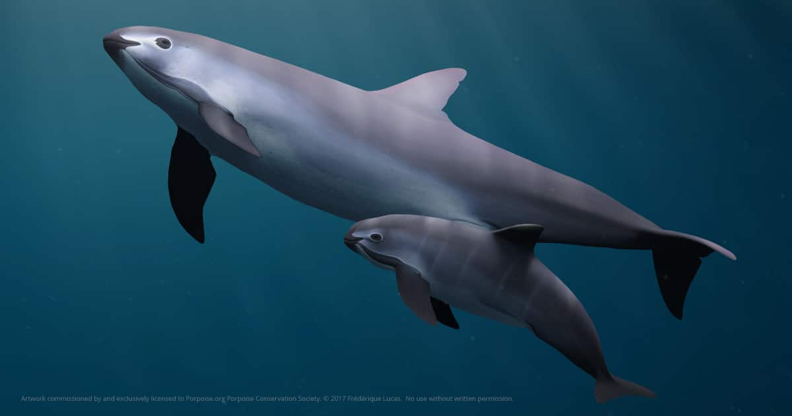

Vaquita,
the world's rarest marine mammal, is on the edge of extinction. The plight of cetaceans—whales, dolphins, and porpoises—as a whole is exemplified by the rapid decline of the vaquita in Mexico, with about 10 individuals remaining. This little porpoise wasn't discovered until 1958 and a little over half a century later, we are on the brink of losing them forever. Vaquita are often caught and drowned in gillnets used by illegal fishing operations in marine protected areas within Mexico's Gulf of California. The population has dropped drastically in the last few years.
The vaquita has a large dark ring around its eyes and dark patches on its lips that form a thin line from the mouth to the pectoral fins. Its top—the dorsal surface—is dark gray, its sides are pale gray, and its underside—the ventral surface—is white with long, light gray markings. Newborn vaquita have darker coloration and a wide gray fringe of color that runs from the head to the flukes, passing through the dorsal and pectoral fins. They are most often found close to shore in the Gulf's shallow waters, although they quickly swim away if a boat approaches.

